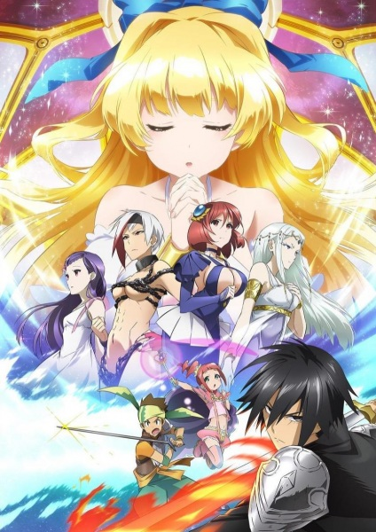

Anime to Watch - My Personal Recommendations
Kuroko's Basketball

Rating: 8/10 - Very Good
Where to Watch: Netflix, Crunchyroll, Amazon Prime
For the last three years, Teikou Middle School has dominated the national basketball scene with its legendary lineup: the "Generation of Miracles." It consisted of five prodigies who excelled at the sport, but a "Phantom Sixth Man" lurked in the shadows and helped earn the team their revered status. Eventually, their monstrous growth jaded them from the sport they loved and made them go their separate ways in high school.
In search of new members, the Seirin High School basketball team recruits Taiga Kagami and Tetsuya Kuroko, two freshmen who seem to have significant differences in abilities. Having returned recently from America, Kagami has both a natural aptitude and relentless love for the sport. Meanwhile, Kuroko lacks presence and exhibits no outstanding athletic talent. However, it is later revealed that he is Teikou's Phantom Sixth Man—the player once part of the Generation of Miracles.
Kuroko wants to prove to the Seirin team that he is strong in his own way. Seeing his conviction, Kagami forms a dynamic partnership with Kuroko, the latter promising to support Kagami's "light" as his "shadow." Alongside their new Seirin teammates, they aim to conquer the upcoming Interhigh championship, but the reappearance of Kuroko's former teammates complicates their plan.
Summer Wars

Rating: 8/10 - Very Good
Where to Watch: Amazon Prime & Crunchyroll
OZ, a virtual world connected to the internet, has become extremely popular worldwide as a spot for people to engage in a large variety of activities, such as playing sports or shopping, through avatars created and customized by the user. OZ also possesses a near impenetrable security due to its strong encryption, ensuring that any personal data transmitted through the networks will be kept safe in order to protect those who use it. Because of its convenient applications, the majority of society has become highly dependent on the simulated reality, even going as far as entrusting the system with bringing back the unmanned asteroid explorer, Arawashi.
Kenji Koiso is a 17-year-old math genius and part-time OZ moderator who is invited by his crush Natsuki Shinohara on a summer trip. But unbeknownst to him, this adventure requires him to act as her fiancé. Shortly after arriving at Natsuki's family's estate, which is preparing for her great-grandmother's 90th birthday, he receives a strange, coded message on his cell phone from an unknown sender who challenges him to solve it. Kenji is able to crack the code, but little does he know that his math expertise has just put Earth in great danger.
Death Parade
Rating: 8/10 - Very Good
Where to Watch: Crunchyroll, Hulu, Amazon Prime
After death, either Heaven or Hell awaits most humans. But for a select few, death brings them to Quindecim—a bar where only pairs of people who die at the same time can enter. Attending the bar is an enigmatic figure known as Decim, who also acts as the arbiter. He passes judgment on those who wind up at Quindecim by challenging them to a life-threatening game. These games determine if the patron's soul will reincarnate into a new life, or be sent into the void, never to be seen again.
From darts and bowling to fighting games, the true nature of each patron slowly comes to light as they wager their souls. Though his methods remain unchanged, the sudden appearance of a black-haired amnesiac causes Decim to reevaluate his own rulings.
Tokyo Ghoul
Rating: 8/10 - Very Good
Where to Watch: Crunchyroll, Hulu, Amazon Prime
A sinister threat is invading Tokyo: flesh-eating "ghouls" who appear identical to humans and blend into their population. Reserved college student Ken Kaneki buries his nose in books and avoids the news of the growing crisis. However, the appearance of an attractive woman named Rize Kamishiro shatters his solitude when she forwardly asks him on a date.
While walking Rize home, Kaneki discovers she isn't as kind as she first appeared, and she has led him on with sinister intent. After a tragic struggle, he later awakens in a hospital to learn his life was saved by transplanting the now deceased Rize's organs into his own body.
Kaneki's body begins to change in horrifying ways, and he transforms into a human-ghoul hybrid. As he embarks on his new dreadful journey, Kaneki clings to his humanity in the evolving bloody conflict between society's new monsters and the government agents who hunt them.
High Score Girl
Rating: 8/10 - Very Good
Where to Watch: Netflix,
The year is 1991, and arcade video games are the latest craze. Becoming a professional gamer is a far-fetched dream in an industry that has yet to spread its influence. Yet, that is the path sixth-grader Haruo Yaguchi wants to pursue. His aptitude for video games has earned him respect in local arcades and bestowed him with confidence and pride, both of which are shattered when fellow classmate Akira Oono easily defeats him in Street Fighter 2.
Akira is rich, pretty, and smart—as close as can be to a perfect girl. But Haruo had never cared about these things as, despite his multiple shortcomings as a person, his supremacy in video games was, in his mind, undisputed. So, now that someone has appeared who can rival him, part of Haruo cannot help but loathe her. Another part, however, itches for somebody who can compete with him on equal terms, and Akira is more than capable.
Afro Samurai
Rating: 8/10 - Very Good
Where to Watch: Crunchyroll, Tubi, Amazon Prime, Hulu
When he was a young boy, Afro witnessed his father be cut down in a duel at the hands of a man known only as Justice. After taking the life of Afro's father, Justice cast aside his Number Two headband and took the Number One to claim its godly powers as his own.
Years later, having obtained the Number Two headband which grants him the right to challenge the Number One, Afro moves forward in his hunt for revenge on the man who murdered his father. There is just one thing that stands in his way—everyone else in the world! Though the Number One can only be challenged by the Number Two, the Number Two can be challenged by anyone. As his enemies gather to try and take the title of Number Two, Afro must fight through a myriad of foes and obstacles if he hopes to reach the Number One and claim vengeance once and for all.
Black Lagoon

Rating: 8/10 - Very Good
Where to Watch: Crunchyroll & Hulu
Salaryman Rokurou Okajima spends his days trying to climb his company's corporate ladder, until one day when a business negotiation in Thailand goes awry. During the botched deal, he falls hostage to the Lagoon Company—a band of ruthless pirate mercenaries. Left to the whims of his captors after his managers refuse to pay his ransom, Rokurou does the unthinkable: instead of begging for his life, he joins the very crew who kidnapped him.
Now a member of the group, Rokurou must adjust to his new residence in the dissolute hellscape known as Roanapur, a city where corruption and crime run rampant, and even the smallest slipup could cost him his life. If not for one of the many crime syndicates on the island, Rokurou also constantly finds himself at odds with his brash, gunslinging colleague, Revy.
As Rokurou struggles to abandon his past—and with more than just the profits from the Lagoon Company's illegal trading on the line—he must quickly find the resolve to make tough decisions in high-stress situations while keeping his humanity intact.
Gad Guard
Rating: 8/10 - Very Good
Where to Watch: Crunchyroll
Several hundred years in the future, the resources of the Earth runs out, and the progression of the human race has stagnated. The world is now divided into "Units." A boy named Hajiki Sanada lives with his mother and sister in Unit 74, in a place called "Night Town," in which all electricity is shut down at midnight. The key in this story is an object called the GAD. GADs have the ability to reconstruct materials while reacting to feelings of an organic life. The size and shape of the resulting product seem to be different depending on the kinds of feelings that the life possesses. When Hajiki comes in contact with one by accident, it transforms into a huge robot—a Tekkoudo, or "Iron Giant"—which Hajiki names Lightning. And soon he realizes that he isn't the only one with a Tekkoudo, and must find out how to deal with those others who he feels are the "same" as himself.
Big Windup!
Rating: 8/10 - Very Good
Where to Watch: Crunchyroll
Ren Mihashi was the ace of his middle school's baseball team, but due to his poor pitching, they could never win. Constant losses eventually lead to his teammates bullying him and reached the point where his teammates no longer tried to win, causing Mihashi to graduate with little self-esteem. As a result, Mihashi decides to go to a high school in a different prefecture where he has no intention of playing baseball. Unfortunately, upon his arrival at Nishiura High, he is dragged into joining their new team as the starting pitcher.
Although unwilling at first, Mihashi realizes that this is a place where he will be accepted for who he is; with help from the catcher Takaya Abe, he starts to have more confidence in his own abilities. Abe, seeing the potential in Mihashi, makes it a goal to help him become a pitcher worthy of being called an ace.
Food Wars!

Rating: 8/10 - Very Good
Where to Watch: Crunchyroll & Hulu
Souma Yukihira has been cooking alongside his father Jouichirou for as long as he can remember. As a sous chef at his father's restaurant, he has spent years developing his culinary expertise and inventing new dishes to amaze their customers. He aspires to exceed his father's skill and take over the restaurant one day, but he is shocked to learn that Jouichirou is closing up the shop to take a job in New York.
Rather than tagging along with his father, Souma finds himself enrolling at the prestigious Tootsuki Culinary Academy, where only 10 percent of its students end up graduating. The school is famous for its "Shokugeki"—intense cooking competitions between students often used to settle debates and arguments. Jouichirou tells Souma that to surpass him and survive the next three years at Tootsuki and graduate there.
The academy's brutal curriculum and fiercely competitive student body await the young chef, who must learn to navigate the treacherous environment if he wants to stand a chance at realizing his dreams. But is skill alone enough to let him rise to the top?
Cautious Hero: The Hero is Overpowered but Overly Cautious

Rating: 8/10 - Very Good